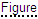

可在两种不同模式中使用交互式文档：
交互式文档的用户界面由两个工作区组成：数据窗口和 3D/2D 窗口。每个工作区都有其自己的控制元素。
要获得帮助，单击交互式文档右下角的“帮助”按钮。
|
“数据”窗口包含“标题”区域和以下选项卡：先决条件、BOM、资源、指示和文档。
“标题”区显示有关工作指导的常规信息。例如，作业代码、工作类型、预期时间。
“先决条件”选项卡描述了在启动技术流程之前必须满足的条件。首次打开交互式文档时，该选项卡处于活动状态。
BOM（物料清单）选项卡显示一个缩进的零件明细表。每条 BOM 记录都提供有关零件的以下信息：零件号、描述、数量和备用零件号。
用户单击 BOM 记录以适合窗口，并在 3D 窗口中高亮显示相应的项。
将指针放置在 BOM 记录上时，将高亮显示 3D 窗口中的记录和相应项。
用户单击加号可展开层次结构。
资源选项卡描述执行技术流程所需的资源。
指示选项卡包含以下区段：当前任务、所需零件、所需资源。当前任务区段显示当前任务的文本。
文本可以包含 3D 项和 2D 图像的超链接。包含 3D 项链接的文本以短划线下划线显示。用户单击加下划线的文本将在 3D 窗口中选择并适合相应的项。
包含 2D 图像链接的文本以点线下划线显示（如 ）。用户单击加下划线的文本将在 2D 窗口中打开相应的图像。
所需零件区段仅显示包含对应 3D 项链接的零件的 BOM 数据。
所需资源区段显示当前任务所需的资源。
“文档”选项卡显示工作指导的完整文本。
在作业模式下，用户可以单击签发按钮进入指示的下一个任务。上一个任务显示单击该任务的签发按钮时的时间和日期（例如签发：星期三、2010 年 7 月 21 日 12:47:10 PM）。只有在当前会话中才能显示时间和日期，因为此数据并未在任何位置都存储。
需要检查消息框可在流程回放时显示。当在需要检查消息框中单击关闭按钮时，相应的任务显示时间和数据（例如已检查：星期三、2010 年 7 月 21 日 12:48:57 PM）。只有在当前会话中才能显示时间和日期。
在“预览”模式下，单击流程所需的任务将在“文档”选项卡中高亮显示任务，并启用流程回放。在“作业”模式中，仅当前任务可用于回放。
文档文本可以包含 3D 项和 2D 图像的超链接（请参见指示选项卡）。
3D 窗口提供文档选项卡中所述流程的 3D 表示。在 3D 窗口中，用户可以使用“回放”条播放流程，并使用鼠标按钮导览。3D 窗口右上角的定位符（例如，三轴架）可用于确定单元或零件的空间位置。
用于控制 3D 窗口中流程回放的按钮。
| 命令 | 用途 |
|---|---|
| 播放 | 在停止或暂停时开始流程的回放。 |
| 暂停 | 在当前步骤处停止回放。 |
| 停止 | 停止并后退当前步骤到开始位置。 |
| 签发 |
在作业模式下可用。 激活下一个任务：该任务将在文档选项卡中高亮显示，并且流程的相应时段在 3D 窗口中回放。文档选项卡中的上一个任务显示单击该任务的签发按钮时的时间和日期。 |
|
设置 |
显示或隐藏设置列表。 速度。设置回放速度。 冻结视点。如果选中此选项，则会将摄像机锁定到当前视图，从而防止在流程回放时摄像机移动。 禁用警报消息。如果选中此选项，则会在回放期间禁用流程的警报消息。 PMI。如果选中此选项，则会显示 PMI 数据。产品加工信息 (PMI) 以 3D 计算机辅助设计表示制造产品组件或子系统所需的非几何属性。 场景光照。 定义光源的数量及其位置以在 3D 窗口中照亮模型。 光源的相对位置显示在列表右侧。 所有光源都随查看器移动。 显示导览立方体。 在 3D 窗口中显示或隐藏导览立方体。导览立方体有三种不同类型的热点区域：边、拐角和面。当您将指针置于导览立方体的边、拐角或面上时，相应的区域将高亮显示。通过这些区域，可以在标准视图之间切换，也可进行旋转。 显示曲面边。如果选中此选项，则会在 3D 窗口中显示曲面边界。 反锯齿.激活用于最小化 3D 窗口中变形构件的技术。 环境遮蔽。激活 3D 窗口中的周围介质遮挡着色和渲染技术。 选择模式.指定要在 3D 窗口中选择的对象表示。 用颜色高亮显示 - 高亮显示所选内容。 透视所选对象 - 除所选对象外，其余对象呈灰色半透明状态。 半透明壳 - 整个模型的外壳呈半透明状态，非选定的内部对象将被隐藏。 描画光标悬停对象。所选内容带轮廓显示。 |
显示回放进度。单击此条可选择所需的流程时段。
用于显示和隐藏在 3D 窗口中选择的对象并使其适合窗口和变得透明的按钮。
| 用户界面 | 按钮 | 用途 |
|---|---|---|
| 在单独的窗口中显示选定对象 |

|
如果启用，则在辅助 3D 窗口中显示选择内容。 |
| 忽略透明度 |

|
如果启用，就可以穿过 3D 窗口中的透明项执行单击操作，因为透明项将不对用户的单击做出响应。 |
| 全部恢复 |

|
显示所有隐藏和半透明对象。 |
| 适合窗口 |

|
使所选项的限定框适合 3D 窗口。 |
| 显示 |

|
使先前在 3D 窗口中隐藏的所选项可见。 |
| 隐藏 |

|
隐藏 3D 窗口中的所选项。 |
| 全不选 |

|
取消选择所有项。 |
| 透明度 | 用于设置所选项的透明度值。如果在 3D 窗口中选择一个或多个项，则透明度命令可用。 |
选定的对象将显示在辅助 3D 窗口中。
| 用户界面 | 按钮 | 用途 |
|---|---|---|
| 设置中心 |

|
用于指定 3D 模型的旋转中心。 |
| 显示旋转中心 |

|
用于隐藏或显示旋转中心。 |
| 全部适合 |

|
使整个 3D 模型在 3D 窗口中完全可见。 |
| 水平对齐 |

|
将摄像机的水平（但不是纵向）轴设为与坐标系中的水平平面平行。 |
| 测量 |

|
打开工具以测量距离。 在 3D 窗口中，只需在一个点上单击一次，然后在第二个点上再次单击。 然后将显示两个红点之间的距离。 要获得投影到竖直面或水平面上的点之间的距离，从列表中选择投影平面名称。 要更改长度单位，选择单位。 要设置指引线长度，拖动 H 滑块。 选择保持可见，使尺寸线在关闭测量工具后仍然可见。要设置新的点，单击清除或按 Esc 键，然后在 3D 窗口中指定点。
WARNING 切勿在工作流程中直接使用测量结果，因为 3D 插图可能与实际产品有所不同。要获取制造或维修所需的尺寸，请参考相关技术文档。 |
| 截平面 |

|
显示模型，就好像它是按平面切割的一样。 使用控件设置（左视图、俯视图、前视图）和旋转（X 和 Y）截平面。要移动截平面，拖动 D 滑块。 使用翻转镜像截面。 选择精确模式可提高滑块的精度。选择保持可见，使截面在关闭工具后可见。要将截平面移至所选内容的中心，单击重置。 |
| 前部 |

|
从正面显示模型。 |
| 后退 |

|
从背面显示模型。 |
| 向左 |

|
从左侧显示模型。 |
| 向右 |

|
从右侧显示模型。 |
| 置顶 |

|
从顶部显示模型。 |
| 置底 |

|
从底部显示模型。 |
| 正等测 |

|
在正等测图中显示模型。 |
在 3D 窗口中右键单击任意位置以访问上下文相关菜单。
| 命令 | 用途 |
|---|---|
| 重置 | 重置步骤视图。 |
| 全部适合 | 使项在 3D 窗口中完全可见。 |
| 关于 | 显示交互式文档、3D 查看器和 2D 查看器的版本。 |
2D 窗口显示与数据窗口中所述流程关联的矢量图像和光栅图像。
用户单击“数据”窗口（“指示”选项卡或“文档”选项卡）中的 2D 图像超链接时，2D 窗口将替换 3D 窗口。
右键单击 2D 窗口可访问可用的上下文相关命令。命令列表取决于在 2D 窗口中使用的 2D 查看器。| 操作 | 用户操作 |
|---|---|
| 平移 | 移动鼠标时按住鼠标左键。 |
| 缩放 | 向前或向后旋转鼠标滚轮。 |
| 帮助 |

|
提供用户界面的帮助系统。 |
| 3D |

|
打开 3D 窗口。 |